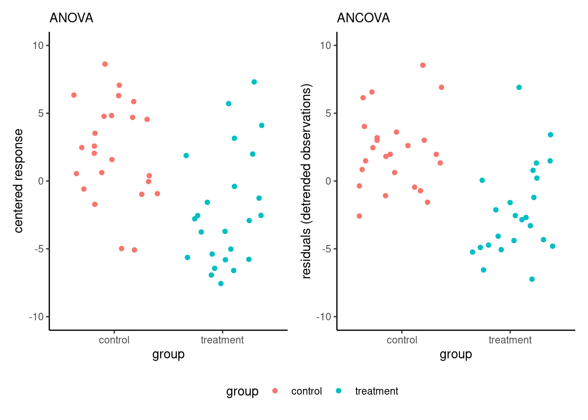

The previous chapter dealt with factorial experiments in which all experimental factors are of interest. It is possible to use measurements concomitant to the data collection (for example, value to a test before we complete the group assignment for the manipulation) to get a measure of the relative strength of students. The more correlated these measures are with the response, the more we can explain the data. We then proceed with the random assignment of our experimental units to different conditions.
Including blocking factor or covariates should in principle increase power and our ability to detect real differences due to experimental manipulations, provided the variables used as control are correlated with the response. Generally, they are not needed for valid inference, which is guaranteed by randomization, and shouldn’t be used to assign treatment.
6.1 Blocking factors
In many instances, some of the characteristics of observational units are not of interest: for example, EEG measurements of participants in a lab may differ due to time of the day, to the lab technician, etc. These are instances of blocking factors: variables that impact the measurement variability, but that are not of direct interest. By filtering their effect out and looking at the residual variability that is unexplained by the blocking factors. Block designs reduce the error term, at the cost of including and estimating additional parameters (group averages). Experimental units are typically assigned to blocking factor using stratified sampling to ensure comparisons can be made.
We will analyse block designs in the same as we did for multi-way analysis of variance model, with one notable exception. Typically, we will assume that there is no interaction between experimental factor and blocking factors.1 Thus, we will be interested mostly in main effects of the experimental factors.
Example 6.1 (The surprise of reaching out: paired data as blocking factors) We consider paired data from Study 3 of Liu et al. (2023), who looked at the appreciation of people reaching out to them in a unsolicited manner. The data includes the appreciation score of both responder and initiator, along with sociodemographic variables (age and gender).
While a paired \(t\)-test is the natural (and arguably simplest way) to compare the difference in appreciation scores, we reformat the data to long format (one response per line), with a categorical variable role indicating the role of the participant and dyad, a dummy number indicating which participants belong to which pair. We then fit an analysis of variance model to the scores with both dyad and role. The \(F\)-tests for the main effects indicate that the dyads (66 additional parameters, since there are 67 pairs) filter out significant part of the variability. If we consider estimated marginal means and look at the \(p\)-value and the pairwise difference between initiator and respondent, we find exactly the same statistic, degrees of freedom and \(p\)-value for the pairwise difference as the paired \(t\)-test.
Paired t-test
data: apprec_init and apprec_resp
t = -4.6042, df = 66, p-value = 1.94e-05
alternative hypothesis: true mean difference is not equal to 0
95 percent confidence interval:
-0.6633265 -0.2620466
sample estimates:
mean difference
-0.4626866
# Cast data to long format - one response/participant per lineLRMM23_S3l <- LRMM23_S3 |> dplyr::mutate(dyad =factor(dplyr::row_number())) |> tidyr::pivot_longer(cols =!dyad, names_to =c(".value", "role"),names_sep ="\\_")# Format of the datahead(LRMM23_S3l)
# Treat dyad as a factor and fit two-way ANOVA modelmod <-lm(apprec ~ role + dyad, data = LRMM23_S3l)# Global tests of main effects (balanced data)anova(mod) # There seems to be significant variability filtered out by 'id'
Analysis of Variance Table
Response: apprec
Df Sum Sq Mean Sq F value Pr(>F)
role 1 7.172 7.1716 21.1985 1.94e-05 ***
dyad 66 51.970 0.7874 2.3275 0.0003759 ***
Residuals 66 22.328 0.3383
---
Signif. codes: 0 '***' 0.001 '**' 0.01 '*' 0.05 '.' 0.1 ' ' 1
# Compute pairwise difference for main effect of 'role'emmeans::emmeans(mod, spec ="role") |> emmeans::contrast("pairwise")
contrast estimate SE df t.ratio p.value
init - resp -0.463 0.1 66 -4.604 <.0001
Results are averaged over the levels of: dyad
6.2 Analysis of covariance
A related design includes a continuous covariate to the analysis of variance, whose slope governs the relationship with the response. The strict inclusion isn’t necessary to draw valid causal conclusion, but adding the term helps again reduce the residual variability. Such a design was historically called analysis of covariance, although as analysis of variance models, they are nothing but linear regression models.
In an analysis of covariance, we include a linear component for a (continuous) covariate, with the purpose again to reduce residual error and increase power. A prime example is prior/post experiment measurements, whereby we monitor the change in outcome due to the manipulation. This post by Solomon Kurz [link] nicely illustrates the added benefits of using covariates when there is strong correlation between your response and the latter
In such setting, it may seem logical to take the difference in post and prior score as response: this is showcased in Example exm-vanStek and Baumann, Seifert-Kessell, and Jones (1992), an analysis of which is presented on the course website.
When we add a covariate, we need the latter to have a strong linear correlation for the inclusion to make sense. We can assess graphically whether the relationship is linear, and whether the slopes for each experimental condition are the same.2
Figure 6.1: Simulated data from two groups with an analysis of covariance model.
The left panel of Figure fig-ancovadifftrend shows the ideal situation for an analysis of covariate: the relationship between response and covariate is linear with strong correlation, with the same slope and overlapping support. Since the slopes are the same, we can compare the difference in average (the vertical difference between slopes at any level of the covariate) because the latter is constant, so this depiction is useful. By contrast, the right-hand panel of Figure fig-ancovadifftrend shows an interaction between the covariate and the experimental groups, different slopes: there, the effect of the experimental condition increases with the level of the covariate. One may also note that the lack of overlap in the support, the set of values taken by the covariate, for the two experimental conditions, makes comparison hazardous at best in the right-hand panel.
Figure fig-ancovaresid shows that, due to the strong correlation, the variability of the measurements is smaller on the right-hand panel (corresponding to the analysis of covariance model) than for the centred response on the left-hand panel; note that the \(y\)-axes have different scales.

Figure 6.2: Response after subtracting mean (left) and after detrending (right).
We present two examples of analysis of covariance, showing how the inclusion of covariates helps disentangle differences between experimental conditions.
Example 6.2 (Inconsistency of product description and image in online retailing)Lee and Choi (2019) measured the impact of discrepancies between descriptions and visual depiction of items in online retail. They performed an experiment in which participants were presented with descriptions of a product (a set of six toothbrushes) that was either consistent or inconsistent with the description. The authors postulated that a discrepancy could lead to lower appreciation score, measured using three Likert scales. They also suspected that the familiarity with the product brand should impact ratings, and controlled for the latter using another question.
One way to account for familiarity when comparing the mean is to use a linear regression with familiarity as another explanatory variable. The expected value of the product evaluation is \[
\mathsf{E}(\texttt{prodeval}) = \beta_0 + \beta_1 \texttt{familiarity} + \beta_2 \texttt{consistency},
\tag{6.1}\] where \(\texttt{familiarity}\) is the score from 1 to 7 and \(\texttt{consistency}\) is a binary indicator equal to one if the output is inconsistent and zero otherwise. The coefficient \(\beta_2\) thus measures the difference between product evaluation rating for consistent vs inconsistent displays, for the same familiarity score.
We can look at coefficient (standard error) estimates \(\widehat{\beta}_2 = -0.64 (0.302)\). No difference between groups would mean \(\beta_2=0\) and we can build a test statistic by looking at the standardized regression coefficient \(t = \widehat{\beta}_2/\mathsf{se}(\widehat{\beta}_2)\). The result output is \(b = -0.64\), 95% CI \([-1.24, -0.04]\), \(t(93) = -2.12\), \(p = .037\). We reject the null hypothesis of equal product evaluation for both display at level 5%: there is evidence that there is a small difference, with people giving on average a score that is 0.64 points smaller (on a scale of 1 to 9) when presented with conflicting descriptions and images.
We can compare the analysis of variance table obtained by fitting the model with and without \(\texttt{familiarity}\). Table tbl-anovatabLC19S1 shows that the effect of consistency is small and not significant and a two-sample t-test shows no evidence of difference between the average familiarity score in both experimental conditions (\(p\)-value of \(.532\)). However, we can explain roughly one fifth of the residual variability by the familiarity with the brand (see the sum of squares in Table tbl-anovatabLC19S1): removing the latter leads to a higher signal-to-noise ratio for the impact of consistency, at the expense of a loss of one degree of freedom. Thus, it appears that the manipulation was successful.
Table 6.1: Analysis of variance tables
model without familiarity
term
sum. sq.
df
stat
p-value
consistency
7.04
1
2.55
.113
Residuals
259.18
94
model with familiarity
term
sum. sq.
df
stat
p-value
familiarity
55.94
1
25.60
< .001
consistency
9.80
1
4.49
.037
Residuals
203.24
93
Figure 6.3: Scatterplot of product evaluation as a function of the familiarity score, split by experimental manipulation.
Figure fig-ANCOVA-demo shows that people more familiar with the product or brand tend to have a more positive product evaluation, as postulated by the authors. The graph also shows two straight lines corresponding to the fit of a linear model with different intercept and slope for each display group: there is little material difference, one needs to assess formally whether a single linear relationship as the one postulated in Equation eq-vS can adequately characterize the relation in both groups.
To this effect, we fit a linear model with different slopes in each group, and compare the fit of the latter with the analysis of covariance model that includes a single slope for both groups: we can then test if the slopes are the same, or alternatively if the difference between the slopes is zero. The t-statistic indicates no difference in slope (\(p\)-value of \(.379\)), thus the assumption is reasonable. Levene’s test for homogeneity of variance indicates no discernible difference between groups. Thus, it appears there is a difference in perception of product quality due to the manipulation.
Example 6.3 (Effect of scientific consensus on false beliefs) We consider Study 3 of Stekelenburg et al. (2021), who studied changes in perception of people holding false beliefs or denying (to some extent) the scientific consensus by presenting them with news article showcasing information about various phenomena. The experimental manipulation consisted in presenting boosting, a form of training to help readers identify and establish whether scientifists were truly expert in the domain of interest, how strong was the consensus, etc.3
The third and final experiment of the paper focused on genetically modified organisms: it is a replication of Study 2, but with a control group (since there were no detectable difference between experimental conditions Boost and BoostPlus) and a larger sample size (because Study 2 was underpowered).
The data include 854 observations with prior, the negative of the prior belief score of the participant, the post experiment score for the veracity of the claim. Both were measured using a visual scale ranging from -100 (I am 100% certain this is false) to 100 (I am 100% certain this is true), with 0 (I don’t know) in the middle. Only people with negative prior beliefs were recruited to the study. The three experimental conditions were BoostPlus, consensus and a control group. Note that the scores in the data have been negated, meaning that negative posterior scores indicate agreement with the consensus on GMO.
Preliminary checks suggest that, although the slopes for prior beliefs could plausibly be the same in each group and the data are properly randomized, there is evidence of unequal variance for the changes in score. As such, we fit a model with mean \[\begin{align*}
\mathsf{E}(\texttt{post}) &= \begin{cases}
\beta_0 + \beta_1 \texttt{prior} + \alpha_1 & \texttt{condition} = \texttt{BoostPlus}\\
\beta_0 + \beta_1 \texttt{prior} + \alpha_2 &\texttt{condition} = \texttt{consensus}\\
\beta_0 + \beta_1 \texttt{prior} + \alpha_3 &\texttt{condition} = \texttt{control}
\end{cases}
\end{align*}\] with \(\alpha_1 + \alpha_2 + \alpha_3=0\), using the sum-to-zero parametrization, and with different variance for each experimental condition, \[\begin{align*}
\mathsf{Va}(\texttt{post}) = \begin{cases}
\sigma^2_1, & \texttt{condition} = \texttt{BoostPlus},\\
\sigma^2_2, & \texttt{condition} = \texttt{consensus},\\
\sigma^2_3, & \texttt{condition} = \texttt{control}.
\end{cases}
\end{align*}\] Because of the unequal variances, we cannot use multiple testing procedures reserved for analysis of variance and resort instead to Holm–Bonferroni to control the familywise error rate. We here look only at pairwise differences between conditions.4
Table 6.2: Analysis of variance tables
ANOVA model (without prior belief)
term
df
stat
p-value
condition
2
42.5
< .001
ANCOVA model (with prior belief)
term
df
stat
p-value
prior
1
289.2
< .001
condition
2
57.0
< .001
Repeating the exercise of comparing the amount of evidence for comparison with and without inclusion of a covariate shows that the value of the test statistic is larger (Table tbl-anovatabSSVB), indicative of stronger evidence with the analysis of covariance model: the conclusion would be unaffected with such large sample sizes. We of course care very little for the global \(F\) test of equality of mean, as the previous study had shown large differences. What is more interesting here is quantifying the change between conditions.
Table 6.3: Pairwise contrasts with p-values adjusted using Holm–Bonferroni
ANOVA model (without prior belief score).
contrast
estimate
std.error
df
statistic
p.value
consensus vs control
-11.98
4.0
557.04
-3.007
.003
consensus vs BoostPlus
16.31
4.7
545.42
3.490
< .001
BoostPlus vs control
-28.29
4.4
504.57
-6.489
< .001
ANCOVA model (with prior belief score).
contrast
estimate
std.error
df
statistic
p.value
consensus vs control
-11.84
3.3
543.50
-3.544
< .001
consensus vs BoostPlus
17.47
4.3
524.31
4.108
< .001
BoostPlus vs control
-29.30
3.9
459.08
-7.454
< .001
Table tbl-contraststabSSVB shows the pairwise contrasts, which measure two different things: the analysis of variance model compares the average in group, whereas the analysis of covariance (the linear model with prior) uses detrended values and focuses on the change in perception. Because the data are unbalanced and we estimate group mean and variance separately, the degrees of freedom change from one pairwise comparison to the next. Again, using the covariate prior, which is somewhat strongly correlated with post as seen in Figure fig-vanStekS3, helps decrease background noise.
Table 6.4: Summary statistics of belief as a function of time of measurement and experimental condition.
time
condition
mean
se
prior
BoostPlus
57.65
1.69
prior
consensus
56.32
1.67
prior
control
56.49
1.68
post
BoostPlus
2.62
3.53
post
consensus
18.93
3.06
post
control
30.91
2.56
Figure 6.4: Difference between prior and post experiment beliefs on genetically engineered food.
Pitfall
Stekelenburg et al. (2021) split their data to do pairwise comparisons two at the time (thus taking roughly two-third of the data to perform a two sample t-test with each pair). Although it does not impact their conclusion, this approach is conceptually incorrect: if the variance was equal, we would want to use all observations to estimate it (so their approach would be suboptimal, since we would estimate the variance three times with smaller samples).
On the contrary, using a model that assumes equal variance when it is not the case leads to distortion: the variance we estimate will be some sort of average of the variability \(\sigma_i\) and \(\sigma_j\) in experimental condition \(i\) and \(j\), again potentially leading to distortions. With large samples, this may be unconsequential, but illustrates caveats of subsample analyses.
Pitfall
Figure fig-vanStekS3f1 shows the relationship between prior and posterior score. The data show clear difference between individuals: many start from completely disbelieving of genetically engineered food and change their mind (sometimes drastically), there are many people who do not change idea at all and have similar scores, and many who give a posterior score of zero. This heterogeneity in the data illustrates the danger of only looking at the summary statistics and comparing averages. It does not tell the whole picture! One could investigate whether the strength of religious or political beliefs, or how much participants trust scientists, could explain some of the observed differences.
Figure 6.5: Scatterplot of negated prior and posterior belief score.
Summary
Inclusion of blocking factor and continuous covariates may help filtering out unwanted variability.
These are typically concomitant variables (measured alongside the response variable).
These designs reduce the residual error, leading to an increase in power (more ability to detect differences in average between experimental conditions).
We are only interested in differences due to experimental condition (marginal effects).
In general, there should be no interaction between covariates/blocking factors and experimental conditions.
This hypothesis can be assessed by comparing the models with and without interaction, if there are enough units (e.g., equality of slope for ANCOVA).
Your turn
Box, Hunter, and Hunter (1978) write on page 103 the following motto:
Block what you can and randomize what you cannot.
Explain the main benefit of blocking for confounding variables (when possible) over randomization.
Baumann, James F., Nancy Seifert-Kessell, and Leah A. Jones. 1992. “Effect of Think-Aloud Instruction on Elementary Students’ Comprehension Monitoring Abilities.”Journal of Reading Behavior 24 (2): 143–72. https://doi.org/10.1080/10862969209547770.
Box, G. E. P., W. G. A. Hunter, and J. S. Hunter. 1978. Statistics for Experimenters: An Introduction to Design, Data Analysis, and Model Building. Wiley.
Lee, Kiljae, and Jungsil Choi. 2019. “Image-Text Inconsistency Effect on Product Evaluation in Online Retailing.”Journal of Retailing and Consumer Services 49: 279–88. https://doi.org/10.1016/j.jretconser.2019.03.015.
Liu, Peggy J., SoYon Rim, Lauren Min, and Kate E. Min. 2023. “The Surprise of Reaching Out: Appreciated More Than We Think.”Journal of Personality and Social Psychology 124 (4): 754–71. https://doi.org/10.1037/pspi0000402.
Stekelenburg, Aart van, Gabi Schaap, Harm Veling, and Moniek Buijzen. 2021. “Boosting Understanding and Identification of Scientific Consensus Can Help to Correct False Beliefs.”Psychological Science 32 (10): 1549–65. https://doi.org/10.1177/09567976211007788.
If not, this implies that the covariate interacts with the experimental condition.↩︎
The article is interesting because lack of planning/changes led them to adapt the design from experiment 1 to 3 until they found something. Without preregistration, it is unlikely such findings would have been publishable.↩︎
In Study 2, the interest was comparing manipulation vs control and the Boost vs BoostPlus conditions, two orthogonal contrasts.↩︎